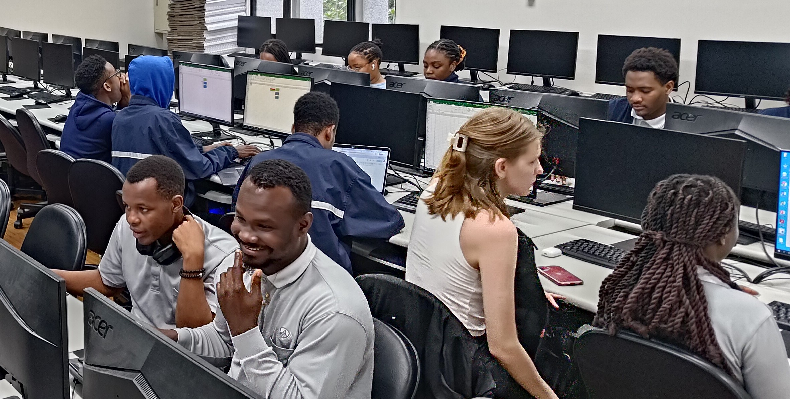

諾丁漢特倫特大學暑期課程
舊版系網收錄英國諾丁漢特倫特大學暑期課程影音，呈現海外學習機會。現有頁面未列出活動年度與完整課程內容。
查看舊版國際交流影音（另開新分頁）INTERNATIONAL ENGAGEMENT
海外學習、來台生活與跨國合作，讓交流成為課堂內外都能親身參與的學習經驗。
本頁整理海外暑期課程與實習、國際學生來台學習，以及不同國籍學生共同參與課程、活動與服務的經驗。資料來自舊版系網及學生實習周記；未公開學生姓名與學號，案例依可核實內容匿名呈現。
OUTBOUND MOBILITY
從海外課程到企業實習，學生在不同國家的學習與工作環境中接觸新的專業情境。
舊版系網收錄英國諾丁漢特倫特大學暑期課程影音，呈現海外學習機會。現有頁面未列出活動年度與完整課程內容。
查看舊版國際交流影音（另開新分頁）舊版系網收錄馬來西亞 ViTrox 公司實習影音，可作為海外企業實習的經驗入口；實習年度與職務細節待正式資料補充。
查看舊版國際交流影音（另開新分頁）舊版影音報導記錄本系學生赴美國紐約進行海外實習交流。另有 2025 年甄選公告，說明該年度計畫地點包含紐約與紐澤西，工作主題涵蓋非營利組織服務與品牌相關實務。
查看系上影音報導（另開新分頁） 查看 2025 年甄選公告（另開新分頁）一份 2026 年實習總結記錄學生在泰國曼谷出口作業部門實習，接觸泰英雙語文件、國際貿易流程、物流與作業程序。周記未明確標示學生國籍，因此先以海外實習案例呈現。
來源：學生實習周記，第 281 列；公司具名與學生身分待確認。INBOUND MOBILITY
從入學準備到在花蓮參與學習與文化活動，來台經驗也包含日常生活、支持服務與共同成長。

在印尼分會實習的周記，記錄協助慈濟大學新生整理簽證文件、回覆學生與家長問題，並參與教育展與校園介紹。這呈現了國際學生來台前的行政支持與招生連結。
來源：學生實習周記，第 98、192、266、302 列。2026 年 11 月的周記記錄學生入住花蓮靜思精舍，參與課程、交流與大型經藏演繹。這些內容可呈現來台期間的集體學習與文化體驗。
來源：學生實習周記，第 325–327 列；學生姓名未公開。INTERNATIONALIZATION AT HOME
跨國交流不只發生在台籍與外籍學生之間；在台不同國籍的學生，也能透過共同學習、活動與服務彼此交流。
在印尼分會實習的周記記錄，學生協助慈濟大學醫工系學生在印尼舉辦 Science Camp，負責現場支援與活動協調，並與台灣學生合作。這是跨文化團隊合作的實例，參與學生並非經管系，頁面不將其描述為經管系出國成果。
來源：學生實習周記，第 136 列。周記描述在花蓮靜思精舍訪問不同國家的學生與志工，記錄大家過年的感受；另有不同文化背景的志工共同參與春節義賣與服務的心得。
來源：學生實習周記，第 5、10 列；公開姓名與照片須另行取得同意。周記記錄參與與台灣慈濟基金會的線上交流會，並分享活動籌備與團隊合作經驗，呈現跨地域連結如何延伸到日常學習。
來源：學生實習周記，第 29 列。
國際學生申請與獎助資訊請以學校當年度公告為準。
查看國際學生申請入學資訊。
前往國際招生 → SCHOLARSHIPS & FINANCIAL AID查閱已確認的獎助與財務支持資訊。
前往獎助學金 →